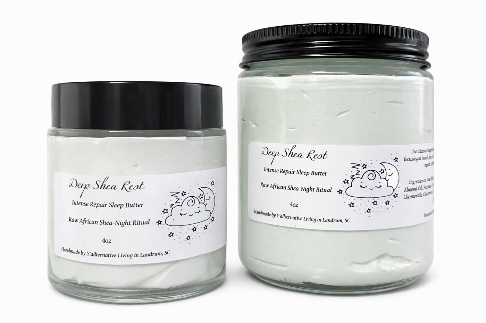

Self-Care For The Black Sheep & Bold Hearts
For anybody who's ever been told they're a little too much: taking up space and smelling amazing was always the plan.

Handmade in Small Batches
Nothing mass-produced. If it's in stock, Savanna made it recently, by hand, on purpose.
Queer-Owned & Proud
Not a rainbow logo slapped on in June. This shop is queer at the root, year-round.
Real, Simple Ingredients
Calendula, arnica, magnesium, shea: stuff you can actually pronounce and trust.
Rooted in Upstate SC
Grown at farmers markets and Pride tables across the Upstate, one conversation at a time.
Small Batch, Big Feels
The stuff y'all keep coming back for, from the flagship tee to the salve that actually gets your skin (and your sleep) to behave.

Made By Hand, Made For Y'all
Y'allternative Living started the way most good things do around here: with someone who was tired of choosing between "self-care" and "actually affordable," so she made the stuff herself. Every salve, soak and scrub is stirred, poured, and labeled by hand in Landrum, SC.
Southern-raised, alt-inspired, and unapologetically queer, we make the stuff we wish existed for us.
Meet The Maker →What Y'all Are Saying
"Fixed my cracked knuckles in 3 days. I've tried every lotion at the drugstore and this is the only thing that works without feeling greasy."
"This bug spray is the truth. Sat outside all evening in the South Carolina humidity and didn't get a single bite."
"The sleep salve is literal magic. I rub it on my temples and I'm out in 10 minutes. Smells incredible too."
We Pop Up In The Wild
Farmers markets, Pride events, and everywhere else folks need a little glitter and grit. We keep our folding table moving through the season. Follow along on Instagram and TikTok @yallternativeliving for the schedule so you can shop in person.
Follow Along (opens in new tab)